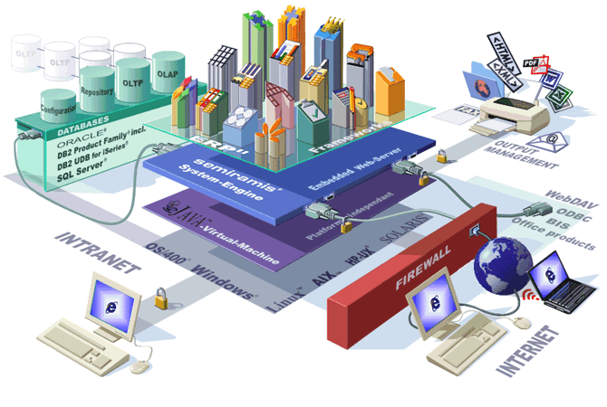

PERFIL DEL TECNOLOGO
ADSI
un analista de sistemas es responsable del estudio de los problemas y las necesidades presentes en la organización para determinar en qué medida pueden el hardware, las aplicaciones software, los archivos y bases de datos, las redes, las personas y los procedimientos actuar conjuntamente para resolver los problemas del modo más adecuado y mejorar los sistemas de la empresa y de información.
Los jóvenes analistas de sistemas, capacitados en el SENA, son profesionales integrales, con capacidad, crítica, solidarios, líderes y emprendedores. Con un sólida formación que permite brindar asesoramiento a las organizaciones de distinto tipo sobre las políticas y estrategias de desarrollo de sistemas de información y áreas de sistemas.
Con capacidad para la planificación, realización y control de la implementación de proyectos de sistemas de información.
SISTEMAS DE INFORMACION
El desarrollo tecnológico –Internet, comunicaciones móviles, banda ancha, satélites, microondas, etc. – está produciendo cambios significativos en la estructura económica y social, y en el conjunto de las relaciones sociales.
La información se ha convertido en el eje promotor de cambios sociales, económicos y culturales. El auge de las telecomunicaciones ha producido una transformación de las tecnologías de la información y de la comunicación, cuyo impacto ha afectado a todos los sectores de la economía y de la sociedad.
La expansión de redes informáticas ha hecho posible la universalización de los intercambios y relaciones, al poner en comunicación a amplios sectores de ciudadanos residentes en espacios geográficos muy distantes entre sí.
Los espacios nacionales se han visto superados por las tecnologías de las información que no tienen fronteras: informaciones políticas, militares, económicas – especialmente financieras, sociales, empresariales, etc. se intercambian y se transmiten cada día por todo el mundo, de manera que nuestra vida está condicionada en cada momento por lo que está sucediendo a miles de kilómetros de distancia.
Cualquier acontecimiento político o económico ocurrido en un país puede tener una repercusión importante en la actividad económica de otras naciones. La subida de los tipos de interés en Estados Unidos, por ejemplo, afecta al precio del dinero en Europa y, consiguientemente, a la liquidez monetaria de los ciudadanos, y por tanto, a sus posibilidades de consumo y bienestar.
La información ha contribuido a que los acontecimientos que se suceden a escala mundial, continental o nacional nos resulten más cercanos. Nuestra visión del mundo está adquiriendo una nueva dimensión por encima de países, comunidades y localidades, lo mismo que le sucede a las empresas. Estamos ante un nuevo modelo social, la "sociedad globalizada", en el que las fronteras desaparecen en beneficio de los intercambios de ideas, mensajes, productos, servicios, personas...
-
Identificar potenciales vendedores de hardware y software, cuando sea apropiado.
-
Recomendar y seleccionar compras de hardware y software (sujeto a aprobación). Diseñar entradas, salidas, diálogos interactivos, flujos y procedimientos de los sistemas.
-
Diseñar archivos y bases de datos (sujeto a aprobación por el administrador de datos).
-
Escribir, probar y/o supervisar el desarrollo de software de aplicaciones.
-
Impartir información a los usuarios que trabajen con nuevos sistemas o versiones.
-

Convertir las operaciones a los nuevos sistemas o versiones.
-
Dar soporte a las operaciones en producción.